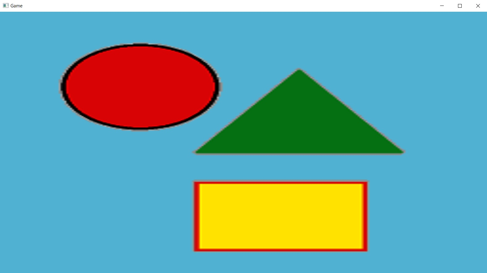

このチャプターでは、次のサンプルプログラムを利用します。ダウンロードをしてください。 Sample_08_01.zip
まず、大前提としてDirectX12は3Dを描画するためのグラフィックスAPIで、2Dを描画するAPIはありません。正確には2D専用のAPIはありません。では、DirectX12でどのようにして2Dを描画するのかというと、3D描画の機能を使って四角形の板ポリを描画して、あたかも2Dであるかのように見せているのです。ですので、2D描画といっても新しいことを学ぶわけではありません。2D を表示するために準備必要なデータは、頂点バッファ、インデックスバッファ、テクスチャ、頂点シェーダー、ピクセルシェーダーなど3D表示と全く同じです。
では、2Dを表示するためのハンズオンを行っていきましょう。Chapter3で行った、三角形ポリゴンの表示とほとんど同じですので、それも思い出しながらハンズオンを実施してみて下さい。
DirectX12で絵を描画するためにはルートシグネチャが必要になってきます。これはここまで説明はしてきていませんが、3D描画でも当然必要です。ルートシグネチャとは大雑把に説明すると、これから絵を描くための情報のデータ構造などを定義しているものです。今回は著者の方でルートシグネチャをラップしているRootSinatureクラスを利用します。`Sample_08_01/Sample_08_01.slnを立ち上げてmain.cppの26行目にリスト8.1のプログラムを入力してください。
[リスト8.1 main.cpp]
//step-1 ルートシグネチャを作成。
RootSignature rootSignature;
InitRootSignature(rootSignature);
続いて2D描画用のシェーダーをロードします。リスト8.2のプログラムを入力して下さい。 [リスト8.2 main.cpp]
//step2 シェーダーをロード。
Shader vs, ps;
//頂点シェーダーをロード。
vs.LoadVS("Assets/shader/sample.fx", "VSMain");
//ピクセルシェーダーをロード。
ps.LoadPS("Assets/shader/sample.fx", "PSMain");
パイプラインステートとは、レンダリングパイプラインの設定です。Chapter1でレンダリングパイプラインについて少しだけ勉強しました。絵が表示されるまでには色々な工程があります。その各種工程に関する設定です。このレンダリングパイプラインについてはあとで、新しい設定を二つほど勉強します。そこでまた詳しく説明します。では、リスト8.3のプログラムを入力してください。
[リスト8.3 main.cpp]
//step-3 パイプラインステートを作成。
PipelineState pipelineState;
InitPipelineState(pipelineState, rootSignature, vs, ps);
続いて、四角形の板ポリの頂点バッファを定義します。今回の頂点は頂点座標とUV座標のデータを保持しています。では、リスト8.4のプログラムを入力して下さい。
[リスト8.4 main.cpp]
//step-4 四角形の板ポリの頂点バッファを作成
//頂点配列を定義。
SimpleVertex vertices[] = {
{
{ -1.0f, -1.0f, 0.0f, 1.0f }, //座標
{ 0.0f, 1.0f}, //UV座標
},
{
{ 1.0f, 1.0f, 0.0f, 1.0f }, //座標
{ 1.0f, 0.0f}, //UV座標
},
{
{ 1.0f, -1.0f, 0.0f, 1.0f }, //座標
{ 1.0f, 1.0f}, //UV座標
},
{
{ -1.0f, 1.0f, 0.0f, 1.0f }, //座標。
{ 0.0f, 0.0f}, //UV座標
}
};
//頂点配列から頂点バッファを作成。
VertexBuffer triangleVB;
triangleVB.Init(sizeof(vertices), sizeof(vertices[0]));
triangleVB.Copy(vertices);
頂点バッファを作成出来たらインデックスバッファを作詞しましょう。リスト8.5のプロ宇グラムを入力してください。 [リスト8.5 main.cpp]
//step-5 板ポリのインデックスバッファを作成。
//インデックスの配列
uint16_t indices[] = {
0,1,2,
3,1,0,
};
//インデックスの配列からインデックスバッファを作成する。
IndexBuffer triangleIB;
triangleIB.Init(sizeof(indices), 2);
triangleIB.Copy(indices);
板ポリに貼り付けるテクスチャをロードしましょう。リスト8.6のプログラムを入力して下さい。 [リスト8.6 main.cpp]
//step-6 テクスチャをロード。
Texture texture;
texture.InitFromDDSFile(L"Assets/image/test.dds");
テクスチャが作成出来たら、ディスクリプタヒープを作成して、テクスチャを登録しましょう。リスト8.7のプログラムを入力してください。
[リスト8.7 main.cpp]
//step-7 ディスクリプタヒープを作成。
DescriptorHeap ds;
ds.RegistShaderResource(0, texture);
ds.Commit();
step-7までのプログラムで２Ｄを描くためのデータの準備は終わりました。では、c++側の最後の実装です。ドローコールを実装しましょう。リスト8.8のプログラムを入力してください。 [リスト8.8 main.cpp]
//step-8 ドローコールを実行。
//ルートシグネチャを設定。
renderContext.SetRootSignature(rootSignature);
//パイプラインステートを設定。
renderContext.SetPipelineState(pipelineState);
//プリミティブのトポロジーを設定。
renderContext.SetPrimitiveTopology(D3D_PRIMITIVE_TOPOLOGY_TRIANGLELIST);
//頂点バッファを設定。
renderContext.SetVertexBuffer(triangleVB);
//インデックスバッファを設定。
renderContext.SetIndexBuffer(triangleIB);
//ディスクリプタヒープを登録。
renderContext.SetDescriptorHeap(ds);
//ドローコール
renderContext.DrawIndexed(6); //引数はインデックスの数。
では、続いてシェーダー側です。Assets/shader/sample.fxを開いて下さい。まずは頂点シェーダーを実装していきます。リスト8.9のプログラムを入力してください。
[リスト8.9 sample.fx]
//step-9 頂点シェーダーを実装。
//１．引数は変換前の頂点情報。
//２．戻り値は変換後の頂点情報。
VSOutput VSMain(VSInput In)
{
VSOutput vsOut = (VSOutput)0;
//入力された頂点座標を変換せずに出力する。
vsOut.pos = In.pos;
vsOut.uv = In.uv;
return vsOut;
}
今回入力してもらった頂点シェーダーは、座標変換など一切行わずに、そのままピクセルシェーダーに渡しています。これは入力された頂点の座標が、すでに正規化されたスクリーン座標系になっているからです。
では、いよいよ最後の実装です。ピクセルシェーダーを実装します。今回のピクセルシェーダーはテクスチャカラーをサンプリングして、それを返しているだけです。リスト8.10のプログラムを入力してください。 [リスト8.10 sample.fx]
//step-10 ピクセルシェーダーを実装。
//１．引数は頂点シェーダーの出力を元に計算された情報。
//２．戻り値はピクセルのカラー。
float4 PSMain( VSOutput In ) : SV_Target0
{
return g_texture.Sample( g_sampler, In.uv );
}
入力出来たら実行してください。図8.1のようなプログラムが実行できていたら完成です。 図8.1 
次の評価テストを行いなさい。 評価テストへジャンプ